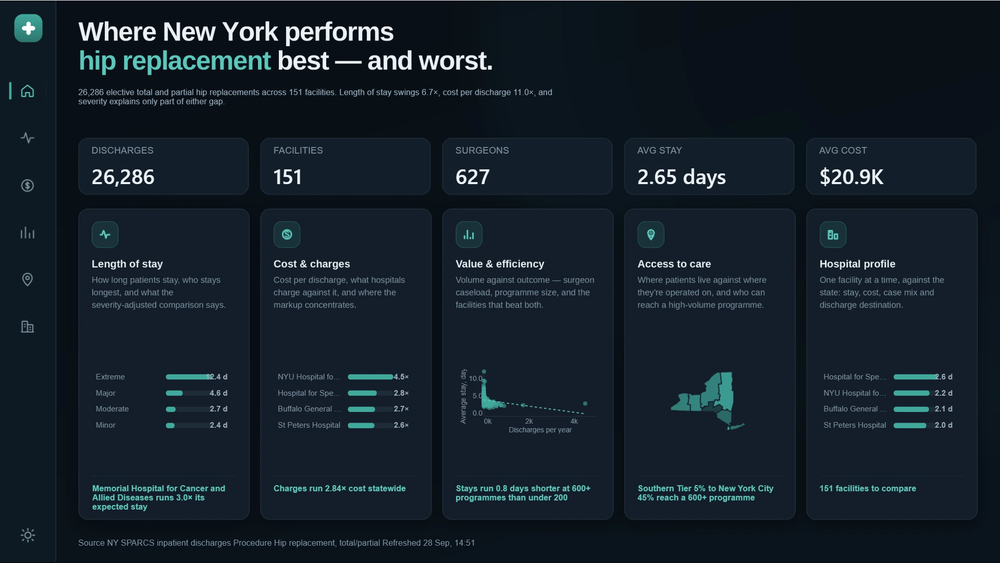

Dashboards and semantic models, shown as screenshots and build notes. Report files, models and datasets are not published here — the interest is in how each one is put together, not the file itself.

Seven pages over 26,286 New York discharges: length of stay, cost, access and per-facility profiles, with severity-adjusted benchmarking and a full dark/light theme pair.